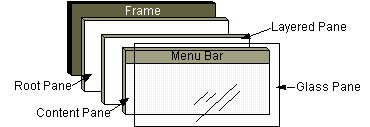

Lección: Usando Componentes Swing
Sección: Cómo Usar Varios Componentes
Cómo Usar los Paneles Raíz
En general, usted no crea directamente un objeto
JRootPane.
En vez de eso, obtiene un JRootPane (¡tanto si lo quiere o no!) cuando instancia un
JInternalFrame o uno de los contenedores de nivel superior de
Swing, tales como JApplet, JDialog
, y JFrame.
Usando Contenedores de Nivel Superior le indica las bases de usar paneles raíz ─ obtener el panel de contenido, establecer su gestor de diseño, y añadir componentes de Swing a él. Esta sección le cuenta más sobre los paneles raíz, incluyendo los componentes que componen un panel raíz y cómo puede usarlos.

Como la figura precedente muestra, un panel raíz tiene cuatro partes:
- El panel de cristal
-
Oculto, por defecto. Si hace el panel de cristal visible, es como una hoja de vidrio sobre todas las otras
partes del panel raíz. Es completamente transparente a menos que implemente el método
paintComponentdel panel de cristal de forma que haga algo, y pueda interceptar eventos de entrada para el panel raíz. En la siguiente sección, verá un ejemplo de uso de un panel de cristal. - El panel estratificado
- Sirve para posicionar sus contenidos, los cuales consisten del panel de contenido y la barra de menú opcional. También puede contener otros componentes en un orden Z especificado. Para más información, vea El Panel Estratificado.
- El panel de contenido
- El contenedor de los componentes visibles del panel raíz, excluyendo la barra de menú. Para más información sobre el uso del panel de contenido, vea Using Top-Level Containers.
- La barra de menú opcional
-
El inicio de los menús del contenedor del panel raíz. Si el contenedor tiene una barra de menús, usa
generalmente el método
setJMenuBardel contenedor para colocar la barra de menú en el lugar apropiado. Para más información sobre el uso de menús y barras de menús, vea Cómo Usar Menús.
El Panel de Cristal
El panel de cristal es útil cuando quiere ser capaz de capturar los eventos o pintar sobre un área que ya contiene uno o más componentes. Por ejemplo, puede desactivar los eventos de ratón para una región de multi-componentes haciendo que el panel de cristal intercepte los eventos. O puede visualizar una imagen sobre múltiples componentes usando el panel de cristal.
Aquí está la foto de una aplicación que demuestra las características del panel de cristal. Contiene una casilla de verificación que le permite establecer si el panel de cristal es "visible" ─ si puede obtener eventos y pintarse a sí mismo en pantalla. Cuando el panel de cristal está visible, bloquea todos los eventos de entrada de alcanzar los componentes en el panel de contenido. También pinta un punto rojo en el lugar donde se ha detectado el último evento de ratón pulsado.

Intente esto:
-
Pulse el botón Lanzar para ejecutar GlassPaneDemo usando
Java™ Web Start (
descargue KDJ 7 o posterior). Alternativamente, para compilar y ejecutar el ejemplo por usted
mismo, consulte el índice de ejemplos.

-
Pulse el botón 1.
La apariencia del botón cambia para mostrar que ha sido pulsado. -
Pulse la casilla de verificación para que el panel de cristal se haga "visible," y entonces
pulse el botón 1 de nuevo.
El botón no hace click porque el panel de cristal intercepta todos los eventos del ratón. El panel de cristal pinta un círculo rojo donde usted suelta el ratón. -
Pulse la casilla de verificación de nuevo para que el panel de cristal se oculte.
Cuando el panel de cristal detecta un evento sobre la casilla de verificación, lo reenvía a la casilla de verificación. De otra forma, la casilla de verificación no respondería a los clicks.
El siguiente código de
GlassPaneDemo.java muestra y oculta el panel de cristal. Este
programa crea su propio panel de cristal. Sin embargo, si un panel de cristal no hace ningún
pintado, el programa simplemente enlazará los oyentes al panel de cristal por defecto, como es
devuelto por getGlassPane.
myGlassPane = new MyGlassPane(...);
changeButton.addItemListener(myGlassPane);
frame.setGlassPane(myGlassPane);
...
class MyGlassPane extends JComponent
implements ItemListener {
...
//Reacciona para cambiar las pulsaciones del botón.
public void itemStateChanged(ItemEvent e) {
setVisible(e.getStateChange() == ItemEvent.SELECTED);
}
...
}
El siguiente trozo de código implementa el manejo de eventos-de-ratón para el panel de cristal. Si un evento del ratón ocurre sobre la casilla de verificación, el panel de cristal vuelve a enviar el evento para que la casilla de verificación lo reciba.
...//En la implementación del oyente de ratón del panel de cristal:
public void mouseMoved(MouseEvent e) {
redispatchMouseEvent(e, false);
}
.../* The mouseDragged, mouseClicked, mouseEntered,
* los métodos mouseExited, y mousePressed tienen la misma
* implementación que mouseMoved. */...
public void mouseReleased(MouseEvent e) {
redispatchMouseEvent(e, true);
}
private void redispatchMouseEvent(MouseEvent e,
boolean repaint) {
Point glassPanePoint = e.getPoint();
Container container = contentPane;
Point containerPoint = SwingUtilities.convertPoint(
glassPane,
glassPanePoint,
contentPane);
if (containerPoint.y < 0) { //no estamos en el panel de contenido
//Podría tener código especial para manejar los eventos de ratón sobre
//la barra de menús o decoraciones de ventana que no sean del sistema, tales como
//las ofrecidas por la apariencia Java.
} else {
//El evento de ratón está probablemente sobre el panel de contenido.
//Descubra exactamente sobre que componente se ha producido.
Component component =
SwingUtilities.getDeepestComponentAt(
container,
containerPoint.x,
containerPoint.y);
if ((component != null)
&& (component.equals(liveButton))) {
//Reenvía los eventos sobre la casilla de verificación.
Point componentPoint = SwingUtilities.convertPoint(
glassPane,
glassPanePoint,
component);
component.dispatchEvent(new MouseEvent(component,
e.getID(),
e.getWhen(),
e.getModifiers(),
componentPoint.x,
componentPoint.y,
e.getClickCount(),
e.isPopupTrigger()));
}
}
//Actualiza el panel de cristal si lo solicita.
if (repaint) {
glassPane.setPoint(glassPanePoint);
glassPane.repaint();
}
}
Aquí está el código en MyGlassPane que implementa el pintado.
protected void paintComponent(Graphics g) {
if (point != null) {
g.setColor(Color.red);
g.fillOval(point.x - 10, point.y - 10, 20, 20);
}
}
El Panel Estratificado
Un panel estratificado es un contenedor con profundidad tal que los componentes superpuestos pueden aparacer uno encima del otro. Información general sobre los paneles estratificados se encuentra en Cómo Usar Paneles Estratificados. Esta sección describe las particularidades de cómo los paneles raíz usan los paneles estratificados.
Cada panel raíz coloca su barra de menú y el panel de contenido en una instancia de JLayeredPane.
El orden que el panel estratificado suministra habilita comportamientos tales como menús emergentes sobre otros
componentes.
Puede elegir colocar los componentes en el panel estratificado del panel raíz. Si lo hace, debe tener en cuenta que ciertas profundidades están definidas para ser utilizadas para funciones específicas, y debería usar esas profundidades como se pretendía. De otra forma, sus componentes podrían no jugar bien con los demás. Aquí tiene un diagrama que muestra las capas funciones y sus relaciones:

La tabla de abajo describe el uso pretendido para cada capa y lista la constante JLayeredPane
que corresponde a cada capa:
| Nombre de Capa | Valor | Descripción |
|---|---|---|
FRAME_CONTENT_LAYER |
new Integer(-30000) |
El panel raíz añade la barra de menú y el panel de contenido a su panel estratificado a esta profundidad. |
DEFAULT_LAYER |
new Integer(0) |
Si no espedifca una profundidad de componente cuando lo añade al panel estratificado, el panel estratificado lo coloca en esta profundidad. |
PALETTE_LAYER |
new Integer(100) |
Esta capa es útil para las barras de herramientas flotantes y las paletas. |
MODAL_LAYER |
new Integer(200) |
Los cuadros de diálogo de marco interno modal deberían pertenecer a esta capa. |
POPUP_LAYER |
new Integer(300) |
Las ventanas emergentes entran en esta capa porque deben aparecer encima de casi todo. |
DRAG_LAYER |
new Integer(400) |
Destinado a ser utilizado cuando un componente está siendo arrastrado. El componente debería volver a su capa normal cuando se suelte. |
Aquí tiene una foto de RootLayeredPaneDemo, la cual es una versión de LayeredPaneDemo que usa el panel estructurado del panel raíz, en lugar de crear un nuevo panel en capas.

Intente esto:
-
Pulse el botón Lanzar para ejecutar RootLayeredPaneDemo usando
Java™ Web Start (
descarga KDJ 7 o posterior). Alternativamente, para compilar y ejecutar el ejemplo por usted
mismo consulte el
índice de ejemplos.
-
Mueve el cursor por la ventana, para que Duke se mueva encima de otros componentes.
Note que cuando el cursor está encima de componetes sin etiqueta ─ si está en el panel de contenido o en la barra de título de la apariencia Java─ El movimiento de Duke es parado temporalmente. Esto se debe a que los eventos de movimiento del mouse van al componente más profundo en la jerarquía de contención y le interesan los eventos del mouse. El oyente del movimiento del ratón que mueva a Duke está registrado en el panel estratificado, y la mayoría de los componentes en ese panel (con la excepción de las etiquetas) tienen oyentes de movimiento del ratón. Cuando el ratón se mueve sobre un componente interesado en el panel estructurado, el panel estructurado no obtiene el evento y el componente interesado sí lo hace. -
Asegúrese que la casilla de verificación Posición Superior en la Capa está seleccionada, cambia la
capa de Duke a Amarillo (-30000).
Como antes, aparece encima de los otros componentes, excepto para los rectángulos Magenta (0) y Cyan (301). -
Manteniendo a Duke en la capa Amarilla, pulse la casilla de verificación para mandar a Duke a la parte
posterior de la capa -30000.
Duke desaparece porque el panel de contenido y todos los componentes en él están ahora por encima de él. -
Cambie la capa de Duke a Cyan (301), mueve a Duke un poco para que esté de pie en el borde superior del
rectángulo amarillo, y luego presiona la barra espaciadora para abrir la lista desplegable del cuadro
combinado.
Si la apariencia implementa la lista desplegable como una ventana emergente ligera, Duke aparece encima de la lista desplegable.
La IPA del Panel Raíz
Las tablas que siguen listan la IPA para usar paneles raíz, paneles de cristal, y paneles de contenido. Para más información sobre el uso de los paneles de contenido, vaya a Usando Contenedores de Nivel Superior. Aquí están las tablas en esta sección:
La IPA para usar otras partes del panel raíz están descritas en otra parte:
| Método | Propósito |
|---|---|
|
JRootPane getRootPane()
(en JApplet, JDialog, JFrame, JInternalFrame,
y JWindow)
|
Obtiene el panale raíz del applet, diálogo, marco, marco interno, o de la ventana. |
|
static JRootPane getRootPane(Component)
(en SwingUtilities)
|
Si el componente contiene un panel raíz, devuelve ese panel raíz. De otra forma, devuelve el panel raíz (si hay alguno) que contiene el componente. |
|
JRootPane getRootPane()
(en JComponent)
|
Invoca el método getRootPane de SwingUtilities para el
JComponent.
|
|
void setDefaultButton(JButton)
JButton getDefaultButton() |
Establece u obtiene qué botón (si lo hay) es el botón por defecto en el panel raíz. Una acción específica de una apariencia, tal como presionar Intro, causa que se ejecute la acción del botón. |
| Método | Propósito |
|---|---|
|
void setGlassPane(Component)
Component getGlassPane() |
Establece u obtiene el panel de cristal. |
|
void setLayeredPane(JLayeredPane)
Container getLayeredPane() |
Establece u obtiene el panel estratificado. |
|
void setContentPane(Container)
Container getContentPane() |
Establece u obtiene el panel de contenido. |
|
void setJMenuBar(JMenuBar)
JMenuBar getJMenuBar() (no definido en JWindow)
|
Establece u obtiene la barra de menú. |
Ejemplos que Usan Paneles Raíz
Cada prorama Swing tiene un panel raíz, pero pocos lo referencian directamente. Los ejemplos en la siguiente
lista ilustran cómo usar las características de JRootPane o el panel de cristal. También vea estas
listas:
- Ejemplos que Usan Paneles Estratificados
- Ejemplos que Usan Menus
- Ejemplos que Usan Marcos (para ejemplos que usan paneles de contenido)
| Ejemplo | Dónde se Describe | Notas |
|---|---|---|
GlassPaneDemo
|
Esta sección | Usa un panel de cristal que pinta un poquito y reenvía eventos. |
RootLayeredPaneDemo
|
Esta sección | Adapta LayeredPaneDemo para usar el panel estratificado del panel raíz. |
ListDialog |
Cómo Usar Listas | Establece el botón por defecto para un JDialog. |
FrameDemo2 |
Cómo Hacer Marcos | Establece el botón por defecto para un JFrame. |